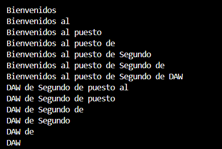
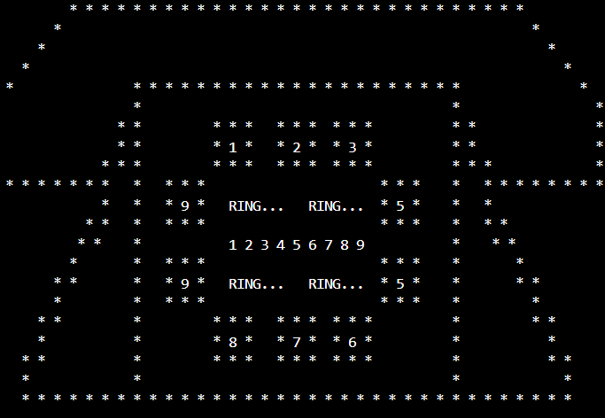

Python es un lenguaje de programación muy utilizado en el desarrollo de aplicaciones, automatización de tareas, inteligencia artificial y desarrollo web.
En el Grado Superior de Desarrollo de Aplicaciones Web utilizamos Python principalmente para trabajar con frameworks como Django.
Aunque esta página es estática y no puede ejecutar código Python, durante el curso hemos realizado múltiples prácticas y ejercicios de bucles, programación orientada a objetos y muchos patrones.

